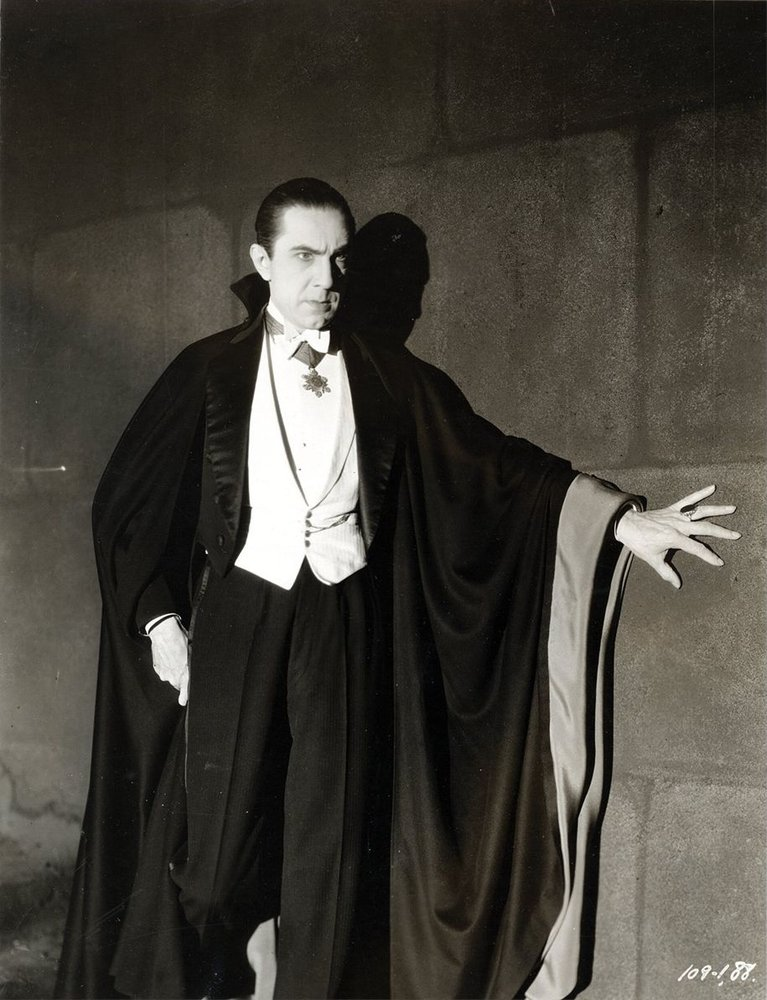

Dracula, Publicity Photograph (Bela Lugosi as Dracula)
Tod Browning · 1931 · Publicity still, black and white
In copyright. Look and learn: shown for study, not for download.
Bela Lugosi had played Dracula on Broadway and happened to be in Los Angeles with a touring company of the play when the film was being cast. The studio had looked first to Lon Chaney. Lugosi lobbied hard for the part and accepted $500 a week for seven weeks' work, $3,500 in all. The sets at Universal were used again each night for a Spanish-language version of the same story.